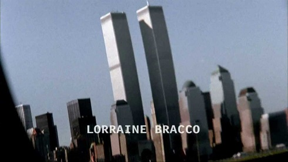

Curiosidades
¿Sabías que 'Los Soprano' iba a ser una película? Si creías saberlo todo acerca de la legendaria serie de HBO os dejamos con estas curiosidades que seguramente os sorprenderán.
-
Lío familiar
Tony siempre se refiere a Christopher como su sobrino, pero en realidad este era primo de Carmela, por lo que ambos hombres eran únicamente primos políticos.
-
Consejo de sabios
James Gandolfini reconoció que mantenía contacto con algunos mafiosos en la vida real para recibir consejo sobre cómo interpretar a Tony Soprano y darle así mayor autenticidad a la serie.
-
Pudo haber sido Tony...
Michael Rispioli hizo la audición para el papel de Tony. No se lo dieron, pero a David Chase le gustó tanto que le dio el papel de Jackie Aprile Sr., un personaje más maduro y adecuado para él.
-
La imagen eliminada
La imagen de las Torres Gemelas, que aparecía en el opening de las tres primeras temporadas, fue eliminada tras los atentados del 11-S.
